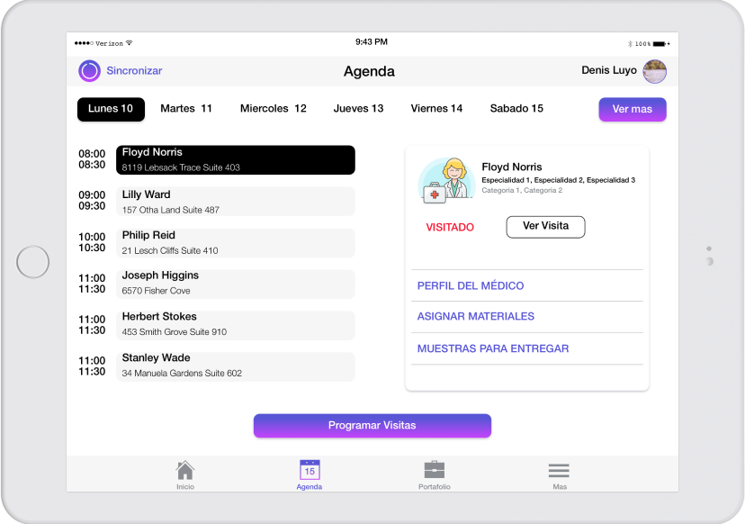
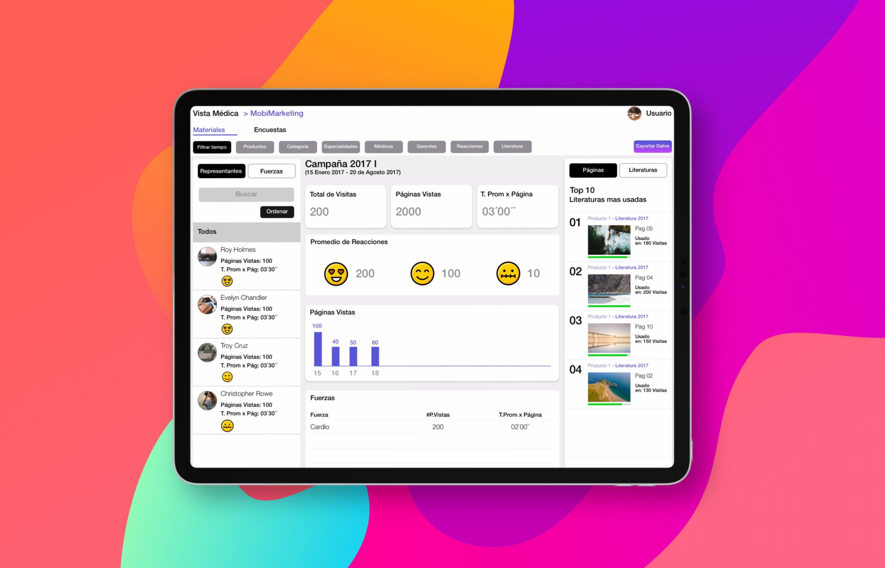

Product Designer - Ux Strategist - Front Developer
Trabajo #15
UX
MobiRep
Mobirep es una Plataforma que se encarga de Administrar todo el Proceso de la Visita Médica de los Laboratorios Médicos.
La plataforma brinda programas Web y aplicaciones para Tablets Ipads, estas ayudan a la gestión de la Previsita, la ejecución de la Visita y el Análisis de la información en la Post Visita
El Reto
En tiempos donde todavia no estaban masificados los productos digitales y el Ipad recien tenia 4 meses en el mercado.
Se nos encargó armar un producto que ayude a los representantes de ventas a gestionar sus actividades durante todos los procesos de una visita Médica.
Además que ayude también a los Gerentes a tener un mejor seguimiento de sus fuerzas de venta y una mayor información sobre la efectividad de la visita.
Mi Rol
Como Product Design lideré el User Experience y UI de nuestros productos Web y Móvil.
Lideré un gran equipo de Diseñadores, Analistas y Programadores.
Aprendímos juntos, nos equivocamos y nos divertimos creando algo totalmente nuevo en el mercado.
UX
User Research
Benchmark Online
User Journey
Encuestas
UI
Wireflows
Wireframes
Visual Design
Prototipo
Project Manager
Gestión
Scrum Master
Plataformas
IOS
Android
Web
2017
Proceso de Creación
Tuvimos una gran ventaja al iniciar con este proyecto, nuestro Gerente General había trabajado durante varios años en el grupo de Pfizer tanto como Representante de Ventas y Gerente de Producto.
El nos brindó el primer onbarding para entender un poco sobre el proceso de visita y los problemas actuales que podian tener.
El trabajo realizado se dividió en las siguientes etapas:
Research
El proceso de Research tuvo dos etapas en parelelo, lo primera fase era entender como un representante realizaba las visitas Médicas y como se desenvolvian con el Médico.
También entender como actualmente los Gerentes entendian y Analizaban la información de su fuerza de Venta, cuales eran los Kpi mas importantes para ellos y que problemas tenían para medirlos.
La segunda Fase de la investigación fue a un nivel mas técnico.
Nosotros teníamos hasta el momento una funcionalidad clara que queriamos trabajar y que eliminaba por completo un problema muy grande de nuestros clientes “La digitalización de sus Ayudas Visuales “ pero en ese momento había poca informción sobre un producto similar y solo grandes empresas como Adobe o Woodwing lo estaban desarrollando pero para otra industria.
Esta fase del Reto fue la más difícil pero nos ayudó a aprender mucho sobre tecnología.
Entrevistas
Realicé 5 entrevista a distintos perfiles de Representantes Médicos, algunas entrevistas fuerón en el campo mientras ellos realizaban sus actividades diarias.
Esto me permitió sentir como ellos realizaban su trabajo día a dia, cómo erá su proceso de visita Actual y que problemas enfretaban.
También realice algunas entrevistas inhouse donde como tema principal queriamos saber:
- Los principales problemas al realizar una visita
- Qué productos actualmente usaban (recuerden que las apps en ese tiempo no eran tán populares como ahora)
- Qué procesos cree que se toma mayor tiempo y retrasa su trabajo.
Alineando la info encontré algunos Insights.
Principales Insights Representantes y Gerentes
98%
Creía que su trabajo se retrasaba cuando no tenía el material de apoyo a tiempo en la visita.
90%
Prefería no llevar toda la información porque era muy pesada.
90%
Tenía problemas al ordenar su Agenda personal con las anotaciones de su Visita
Las reuniones con los Gerentes fueron también muy productivas,
me ayudaron a entender que KPI eran los mas importantes pero también que había mucha información que todavia no lograban Medir. Lo bueno es que con nuestra herramienta,
esto se iba a poder realizar sin ningún problema.
99%
Creia que la información de la visita no se estaba aprovechando demasiado.
99%
Que tenían un gasto enorme en Marketing.
99%
No tenía mucho tiempo para leer informes muy grandes.
Concepto
Nuestra aplicación para los representantes Médicos
Referencia
Con la ayuda de las entrevista a los representantes, a los gerentes y el Onboarding que nos brindó Nuestro Gerente General; teníamos claro la plataforma que queriamos crear.
Este iba a tener un gran impacto en el ahorro de los gastos de Marketing, pero también iba a generar un mayor control en la efectividad de la Visita Médica.
Lo mejor es que la nueva información podría ayudar a los clientes a optimizar procesos y a generar mayor oportunidad de Venta.
Nuestra Plataforma
Aplicación para Representantes
Estas estaban orientadas a una plataforma tablet porque era ideal aprovechar el tamaño para mostrar las ayudas visuales a los Médicos.
Pero el app no solo le permitiría mostrar información, si no tambien capturar información de una manera automática que ayudaría a los gerentes a tener mas info para sus estrategías.
Aplicación para Gerentes
Los gerentes podrían ver toda la info capturada por una web y así interactuar con ella en tiempo real.
Lo mejor de todo es que estas herramientas centrarían toda la info de los distintos canales: marketing y ventas para ser consumida en cualquier momento.
Para las personas mas ocupadas llegaría correos con Kpi Claves para tener un seguimiento optimo.
Automatización de Procesos
En las entrevistas nos dimos cuenta que habia muchos procesos que se manejaban por correos, esto tomaban tiempo de revisión y seguimiento.
Nuestras herramientas tenian un modulo que agilizaban esta información y la centralizaban en un solo lugar
Algunas de las primeras versiones de nuestro APP
Referencia
WireFrames para Representantes
Encontrar la interfaz mas sencilla fue dificíl, los representantes tenian distintos perfiles y Edades.
Algunos eran muy tecnológicos, otros no usaban aplicaciones (recuerden que en ese tiempo las app no estaban masificadas).
Entenderlos y tratar de hacer una interfaz sencilla fue una tarea dificil pero reconfortante.
Apliqué el concepto de Menos es Mas, donde lo representantes iban a realizar menos acciones y las demas iban a ser acciones en background que el app realizaría de manera Automática
Me gusta inicar mi trabajo en papel es mas sencillo de realizar cambios y probar
Referencia
WireFrames para Gerentes
La clave siempre fue brindar la información de una manera Sencilla, los perfiles Gerenciales que encontramos es que tenían su tiempo limitado y no querian perderlo aprendienddo nuevas herramientas.
Estos usaban mucho hojas de Calculo para cruzar bastante información de distintas fuentes y era muy frustante para ellos.
La interfaz propuesta fue algo mas social y personal que brindaba datos de acuerdo a los principales KPI
Me gusta inicar mi trabajo en papel es mas sencillo de realizar cambios y probar
Referencia
Interfaces de usuario
Programas Usados
Figma
Marvel
Invision
Sketch
Home
Lo principal para un representante es tener todo la información de una manera rápida.
Nuestra APP iba a mostrarle lo más importante al inicio para que el representante pueda tomar las acciones necesarias en el día a día.

Agenda
Un representante puede desde su tablet ver y realizar programaciones de una manera Sencilla.
Registrar Visita
El Usuario puede mostrarle al Médico materiales Dinámicos para enriquecer la visita Médica.
El app captura datos de manera automática para analizarlo despues.
Visor HTML5
Nuestro app tiene un visor HTML5 poderoso que puede mostrar ayudas visuales animadas.
Estas además ayudan a que exista una mayor interacción entre el representante y el Médico.
Generando mas información para una buena re-visita.
Nuestras Ayudas visuales
Crear un visor HTML5 fue un gran reto, pero gracias a que nosotros entendíamos sobre tecnología web logramos construir un visor completo.
Este visor logró funcionar de manera integrada con el contenido y así no tuvo ningún inconveniente de memoria.
Nuestro Visor logró ahorrar a los laboratorios millones en gastos de Marketing
Varias Versiones
Nuestro App para tablet iba a estar enfocado en aprovechar el tamaño de la pantalla para realizar una visita dinámica con el Médico.
Por otro lado nuestra app para celular se enfocó en realizar visitas rápidas de pasillo y en registrar datos de la visita de una manera sencilla.
Herramientas para Gerentes
Logramos desarrollar herramientas Web para que los Gerentes puedan revisar los datos que se lograban obtener de la visita.
Estos se enfocaron en mostrar los KPI claves para el negocio y en analizar la información en poco tiempo.
Gracias a nuestra herramienta los gerentes pueden revisar donde se realizó la visita, cuanto tiempo tardo una visita y cuales son los tiempos efectivos de ella.

Hoy
Un sencillo acceso a toda la info de Visita.
Datos
Un rápido acceso a los datos capturados
“En realidad es un resumen de todo lo que se trabajó para esta plataforma, gracias el equipo con el que trabajé, su dedicación, sus ideas y su tiempo logramos construir un producto muy avanzado para su tiempo y que seguimos mejorando.
El reto fue aprender que los problemas de nuestros usuarios son nuestros problemas, esto fue algo que transmití al equipo desde el inicio para así construir grandes productos.
Las horas de trabajo y el aprendizaje valío cada minuto.
Gracias